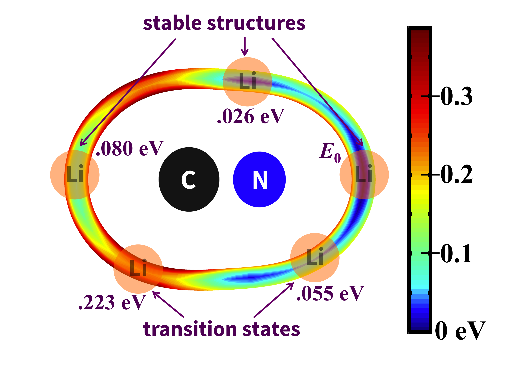
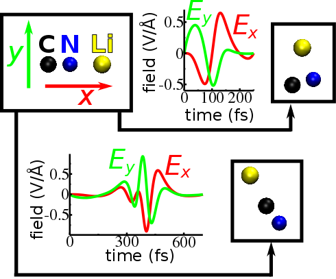

Chemical reactions in nature are thermodynamically driven to release energy, somewhat limiting the prospects for chemical engineering to the reactions that are thermally probable. However, by coherently manipulating chemical structures with external energy sources (such as electric fields), one may begin to explore chemistry that travels uphill in the energy landscape, yielding thermally improbable trajectories and previously unrealized results. Following the development of new large amplitude THz electric field sources, we have begun to explore their potential for coherently manipulating a chemical reaction. A key component of this work is to find an experimentally accessible electric field pulse that will drive a reaction uphill and leave the target cool enough to avoid thermal decay to lower-energy states.
Our work demonstrates simulated coherent traversal of reaction barriers of tenths of an electron-volt with only a few degrees of residual ionic heating.
We used a classical mechanical model of the LiNC molecule and a DFT-based potential surface to generate candidate THz pulses to drive isomerizations of the molecule. In the best cases, we are able to achieve isomerization to the triangular conformation with 3meV of residual energy, and to the alternate LiCN conformation with 10meV of residual energy.

Potential surface of the LiNC molecule, highlighting stable structures and transition barriers. Energies are given in units of eV relative to the most-stable structure, LiNC.
Our simulations employed a classical treatment of ionic positions and a simple molecule to facilitate computations. Further physical considerations (e.g. zero-point motion) and applications to actual material systems are exciting future prospects.

Electric field pulses used to drive the isomerization of LiNC to its triangular conformation (top) and its alternate LiCN conformation (bottom).
Publication:
Pellouchoud, L. A., Reed, E. J., Coherent chemistry with THz pulses: Ultrafast field-driven isomerization of LiNC. Physical Review A, doi:10.1103/PhysRevA.91.052706 (2015).